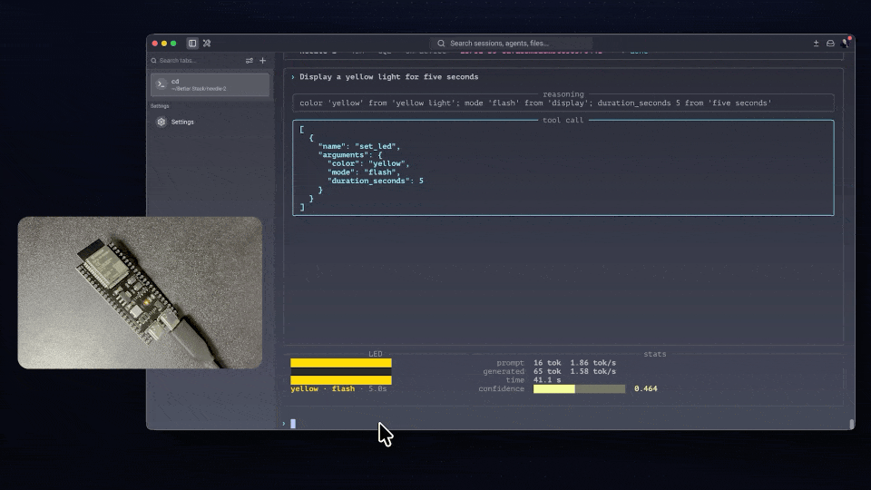

500 tokens/sec on a Raspberry Pi 5. 1.87 on a $5 chip with no OS at all.
Cactus Compute's own engine runs their Needle 2 tool-calling model at up to 500 tokens/sec on a Raspberry Pi 5 — a real computer, with an OS, a filesystem, and gigabytes of RAM to spare. An independent engineer just got the same 45M-parameter model running at 1.87 tokens/sec on an ESP32-S3 microcontroller: no OS, no filesystem, no port of Cactus's own code, and a from-scratch inference engine he wrote himself in about 3,700 lines of C99.
Source & credit: the project is the independent work of Andris Gauračs (GitHub @andrisgauracs, a Toronto-based developer whose other public repos include a Granite-based coding assistant). The underlying model, Needle 2, and its .cact weight format are the work of Cactus Compute, released Apache 2.0 and described in arXiv:2607.18363. Gauračs's port is a separate, independent implementation, also Apache 2.0: github.com/andrisgauracs/needle-2-esp32.

What Needle 2 actually is, and why it's a strange thing to shrink further
Needle 2 is not a chatbot. Cactus built it as a dedicated tool-calling model: 45 million parameters, a 14 MB binary, CQ2-bit quantization baked into training itself rather than applied afterward, and a job description that's narrower than a general assistant's — take a plain-English request and a JSON schema, and emit a schema-valid tool call, or the empty call [] if nothing in the schema fits. Cactus's own numbers put it at 500 tok/s on a Raspberry Pi 5, 400–1,500 tok/s on a Meta Quest 3S or Apple Vision Pro, and 300–700 tok/s on sub-$200 phones — already a small, fast, purpose-built model by the standards of anything in our own catalog.
Gauračs's project asks a different question than "how fast can this go on real hardware." It asks how far down the hardware ladder a real transformer forward pass — grammar constraints and all — can go before it stops being practical at all. An ESP32-S3 has no operating system to speak of, no filesystem, no dynamic memory allocator anything like a phone's, and a dual-core Xtensa LX7 running at 240 MHz. Cactus's own C++ engine, per the port's README, "has no ESP32 build" — there was nothing to simply recompile for the target. Getting Needle 2 running there meant writing a new engine, not porting an old one.
Five modules, one register-starved chip
The engine Gauračs built breaks into five pieces, each doing one job: nd_cact.c reads the .cact container format; nd_quant.c implements the quantization kernels, including pair-LUT GEMV (a lookup-table matrix-vector multiply that avoids repeating the same low-bit multiplication) and a fast Walsh–Hadamard transform; nd_tokenizer.c is a from-scratch SentencePiece BPE tokenizer; nd_model.c runs the forward pass through what Cactus calls a Simple Attention Network; and nd_grammar.c plus nd_sample.c compile a JSON schema into a byte-level grammar at runtime and constrain sampling to only ever emit tokens that keep the output inside that grammar — the mechanism that makes "grammar-guaranteed" a literal claim rather than a marketing one, since an invalid tool call is structurally unreachable rather than just unlikely.
The 13.1 MB model sits in the ESP32-S3's 16 MB of flash; an 8 MB octal PSRAM module ("N16R8"-class) holds the 3.5 MB KV cache and working memory. The README reports something that runs against the usual embedded-systems intuition: reading weights from PSRAM versus flash performs about the same, because the workload is compute-bound rather than memory-bound — the chip spends more time doing the pair-LUT arithmetic on each weight than it spends waiting for that weight to arrive. That's a different bottleneck than the flash-bandwidth-limited ESP32 language models we've covered previously on this blog, where halving the model's byte footprint roughly doubled its speed.
The numbers, and what a 256-token window actually buys you
| Measurement | Value |
|---|---|
| Per-token latency | 534 ms |
| Throughput | 1.87 tok/s (240 MHz) |
| Request, reasoning off | ~25 s |
| Request, reasoning on | ~47 s |
| Boot / model prime time | ~51 s |
Source: andrisgauracs/needle-2-esp32 README, "Performance."
256 tokens is the model's entire context window — the README notes a single-tool schema costs about 104 tokens of that budget before the user's actual request is even added, and a second tool pushes it to 182. That's not a limitation of the ESP32 port specifically; it's the ceiling Needle 2 was trained with. Every constraint here compounds: a tiny model, trained for a narrow job, quantized aggressively, running on a chip with no OS, answering inside a context window that fits maybe two tool definitions and a short instruction. And it still works — the demo shows two real, back-to-back requests, each one streaming its reasoning tokens live and driving an onboard WS2812 RGB LED as a physical side effect of a real tool call, with — the author is explicit about this in the README caption — nothing touching a network at any point.
Why it matters here
This is the fourth ESP32-class microcontroller language model we've covered this month, after slvDev's flash-embedding trick, Carloscodix's on-chip-trained Qapla', and Salman Farsi's fully dense NanoMind-S3 — worth naming plainly rather than pretending it's a coincidence. What's different this time is the shape of the constraint: those three were about how small a model's parameters or training loop could get and still generate free text. This one is about taking an already-tiny, already-quantized, already-purpose-built model and finding out whether its narrowest possible job — schema-constrained tool calling, not conversation — still survives a further 267x throughput cut against the same model's best-case hardware. It does, at a genuinely usable pace for a background sensor task, not a chat session. Every one of these projects is independently mapping the same territory from a different angle: not "can a small model run here," but "how much smaller does the target hardware make the job before something finally breaks," and so far the answer keeps being "further than you'd guess, if the job is narrow enough."
Discuss this on the forum → — running tool-calling models on hardware this small yourself? Point us at the repo.